【笔记】Qualys Security Conference 2019
Qualys 是脆弱性管理领域的国际大厂，和 Rapid 7、Tenable 各有千秋，但每年在 RSAC 上的风头可是比同类任何一家都要牛。从这次大会来看，很多内容我在脆弱性管理方面的观点类似。
- 对脆弱性处理的优先级排序是一大难点。既需要修复，又不能眉毛胡子一把抓，而目前的 CVSS 分数基本只能看看笑笑别无他用。
- 通过数据和图计算，找出攻击路径/暴露面，在脆弱性管理这个领域是一个比简单测绘来说更切实际的一条路。
其实这上面的观点也没什么特别，之前和不少同事/朋友简单聊过，也观察到不少业内朋友都关注到了。例如：安全喷子 的 《 漏洞管理新说 》 ；zwell 的《网络空间测绘的生与死（一）》和《网络空间测绘的生与死（二）》 。
我更想强调的是：目前 Qualys 谈到的这些内容更多是“二层楼”的事情，其实关键在于完整、准确的资产数据，以及准确有效的漏洞情报信息。而国内大多数企业/组织在这个领域还需要有更坚实的“一层楼” —— 至少资产数据要完整、准确吧。千万不要认为看到互联网上有主管单位或各厂家标着“高危”、“紧急”之类的漏洞情报，发文要求打补丁就是管理体系。能不能结合自己的业务，判断紧迫度、平衡补丁对业务的影响以及安全风险，并把这些工作融入到 IT 基础设施和应用的整个运行中，这才是形成可靠的 漏洞/脆弱性/暴露面/攻击路径 管理体系的基础。
站在“十四五”启动的当下，建议大家把 “二层楼” 的事情当成旗舰项目，通过引领和牵引推动更多“一层楼”的基础建设。而不要光顾“二层楼”，那就忘记初心、本末倒置了。光修二层楼，迟早会这样的 ……
不扯了，说说大会吧 ……
一、大会主要内容
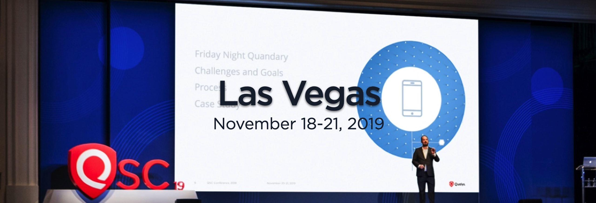
Qualys 认为现有安全生态中的人、流程、工具都是互相隔离的“烟囱”，而计算环境的变化给整个安全行业带来了变化和挑战。Qualys 认为未来的安全市场很可能会形成大企业、云服务商、新一代的 MSSP、IoT 和 OT 供应商等几个细分市场。原有的企业安全厂商会遇到安全架构变革、渠道变革、买家变化、商业模式变革四大挑战。因此，Qualys 提出了 VMDR（Vulnerability Management, Detection & Response） 把漏洞管理带入下一个层次。多个单点产品的集成工作量会非常复杂，而且无法提供完整的上下文信息；而目前基于 SIEM 增加或扩展 UEBA 和 AI/ML 技术也不能让检测结果更加可信。因此，Qualys 期望通过提供单一的云平台来支持 IT 团队、DevOps 团队、安全团队、合规团队，提供前所未有的具有丰富上下文信息的实时可视、检测、自动化和响应的能力。
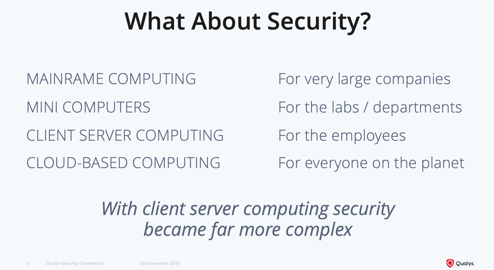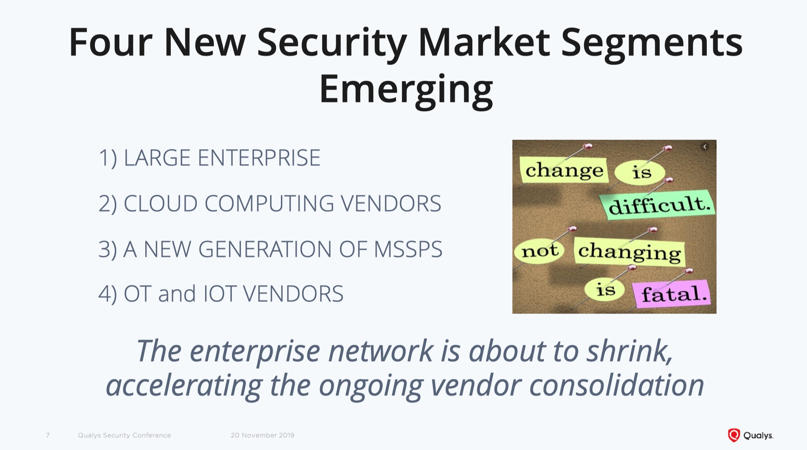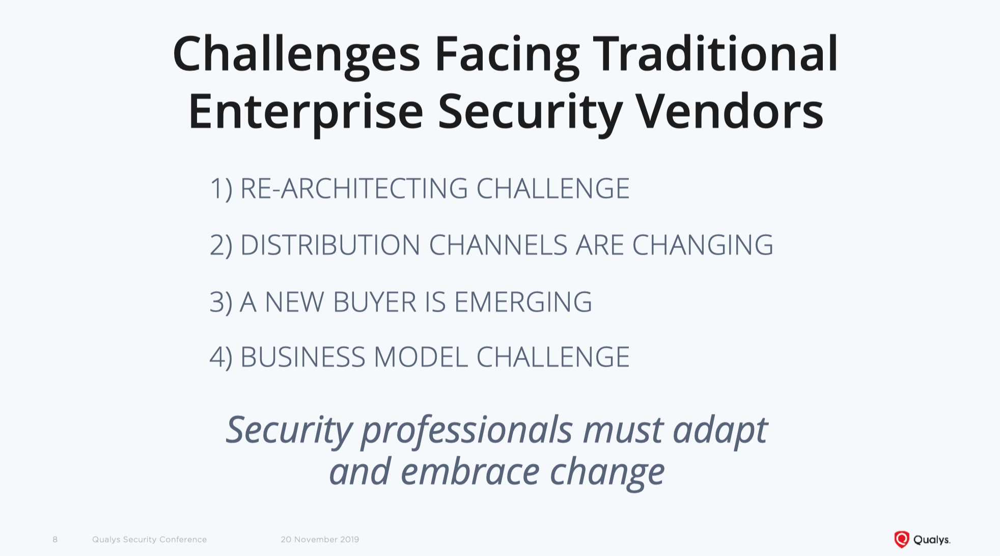
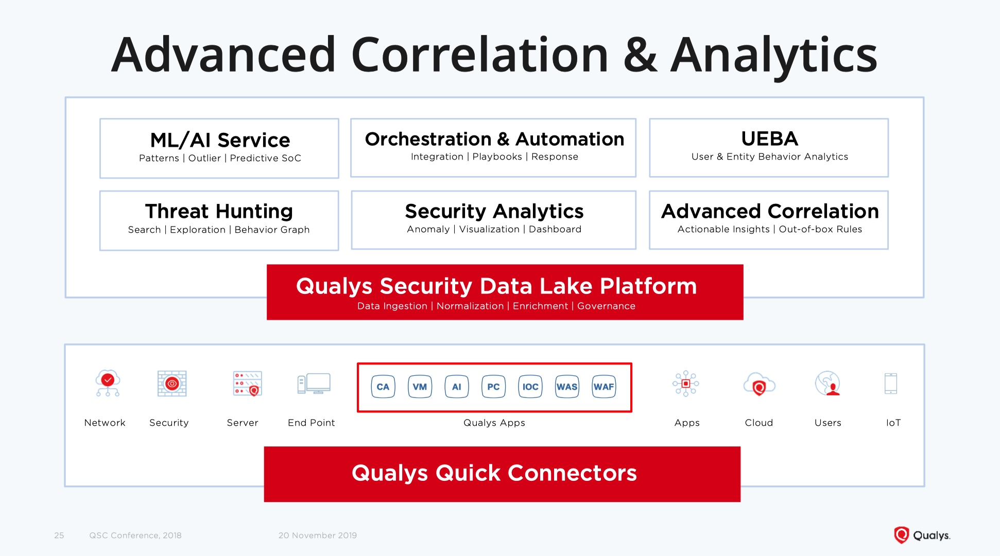
当然，所谓的计算环境的变化，并不是 Qualys 自己拍脑袋的，也是通过 451Research 这家调研公司调研得来的（IBM、Redhat、HP、…… 公司都用过这家公司的调研数据，在美国还有一些名气）。
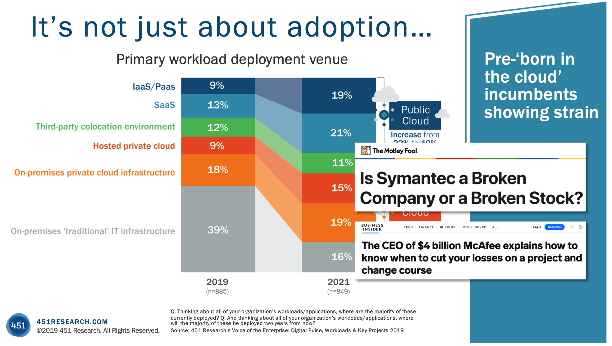
Qualys 认为可以通过 “网络可达性 + 资产安全态势” 发现攻击路径，并且通过攻击路径来调整漏洞和补丁管理的优先级，优化防御态势（优先给攻击路径中关键节点打补丁）；也可以通过攻击路径来提高检测和响应的效率（优先分析攻击路径中的关键主机）。
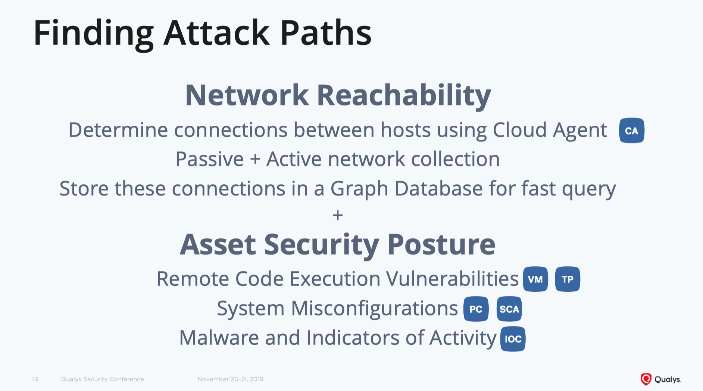
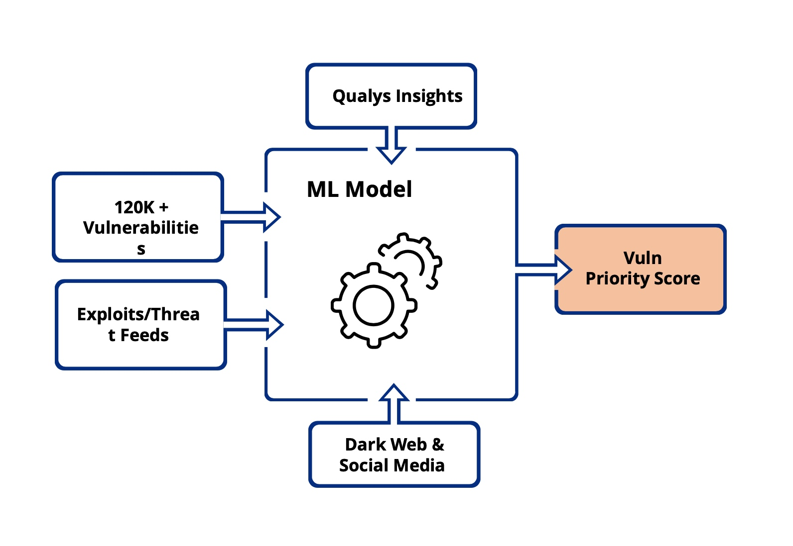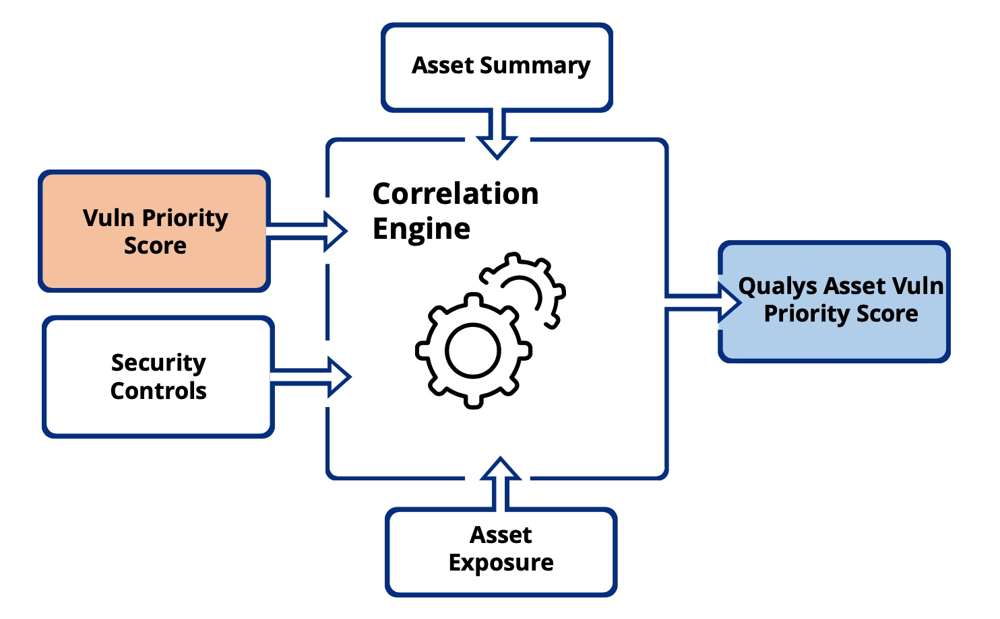
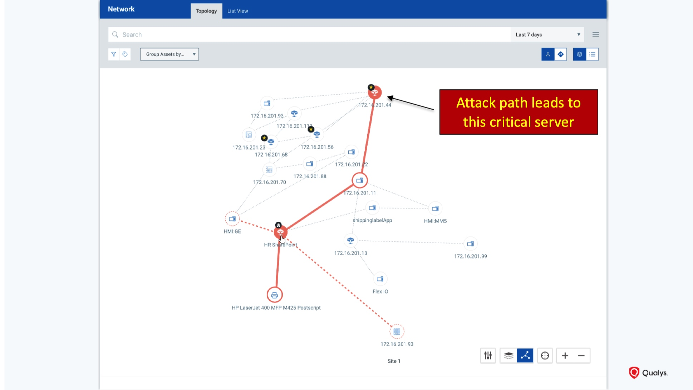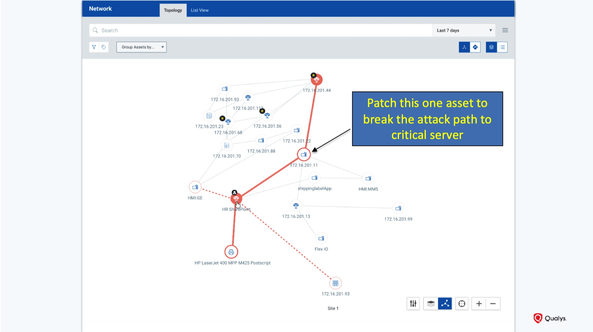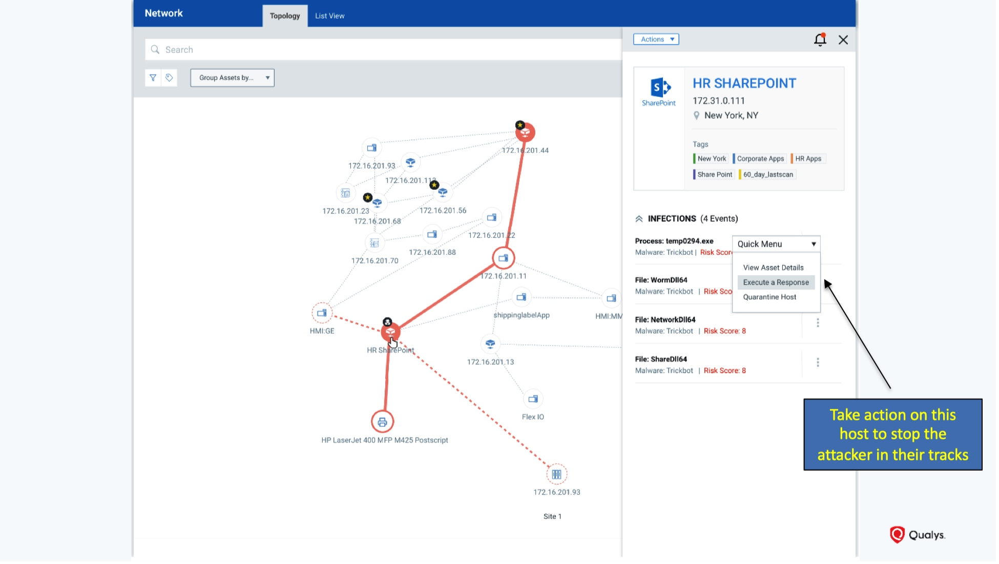
同样，Qualys 也认为必须通过 DevOps 把安全集成到 IT 中，并且通过编排工具来提供自动化的效果。
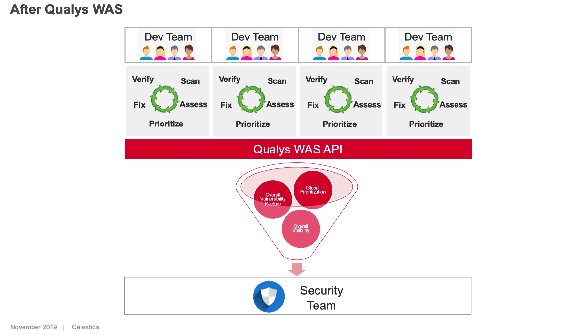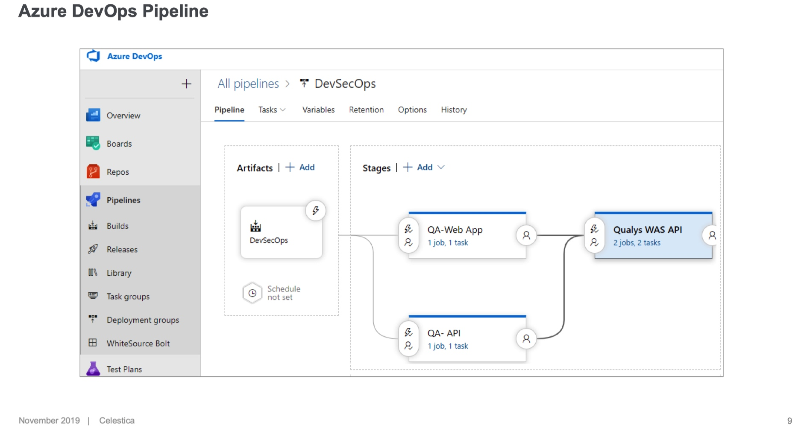
二、Qualys 客户发言
大部分客户讲的还是自己的实践总结，其中一个客户讲了漏洞管理的演进路线。
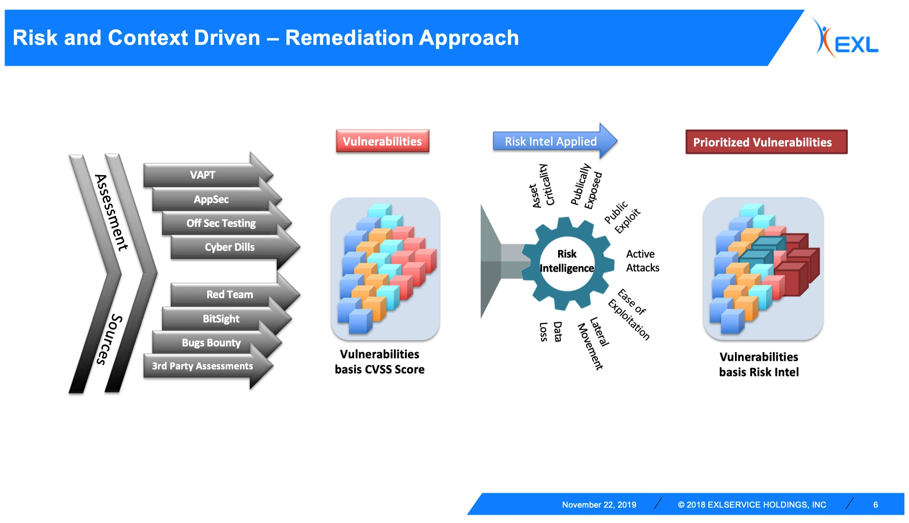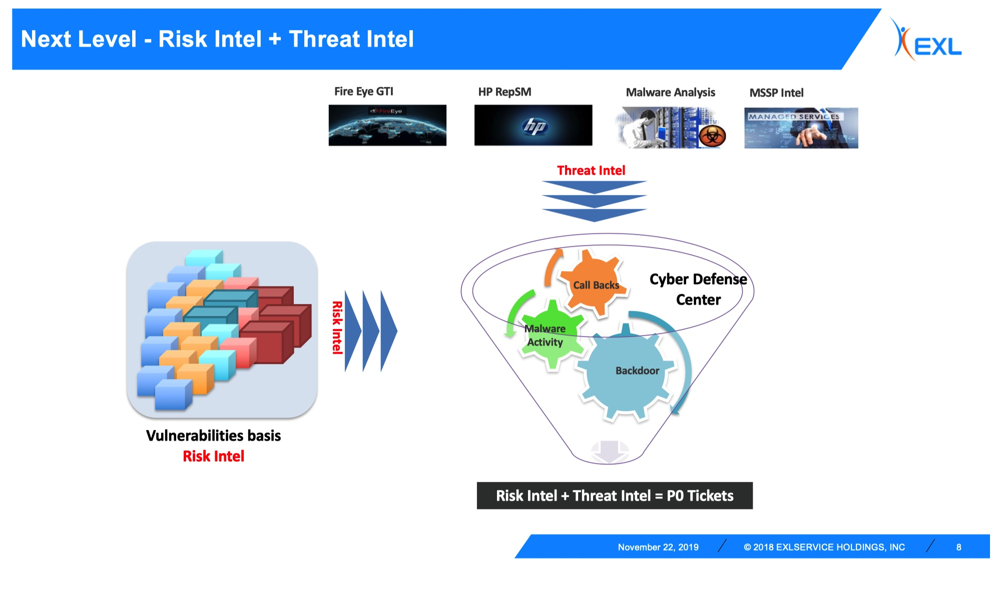
三、资料
- 链接: https://pan.baidu.com/s/1YiRHv5omTZd8VU2AWUE4WA
- 提取码: nmgw
sbilly
主要关注 信息安全、网络安全、系统架构、计算机、网络、开发、科技、制造等科技领域